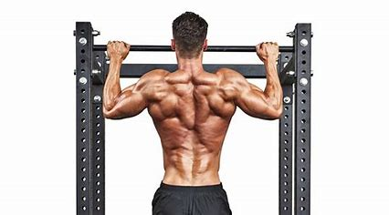

to Work Out in a Gym? Read This First.
Cycling
Cycling is a great way to improve your cardiovascular health and your muscle strength.
to Work Out in a Gym? Read This First.
Smash The Weights With Supersets
Supersets are very effective for anyone looking to add muscle and get great pumps. As long as the two movements you choose can be performed in close proximity to each other, it will save you time in the gym, as well. Rest for 1 minute after you complete each superset.

to Work Out in a Gym? Read This First
Weightlifting
Weightlifting is one of the most popular types of gym workouts, as it is an incredibly effective way to build muscle. There are many different weightlifting exercises that can be done, so it is important to find a routine that works best for you.

to Work Out in a Gym? Read This First.
Full-Body Dumbbell Circuit
This is for anyone wanting to improve endurance or burn a lot of calories at one time. Circuits are sometimes frowned upon by gym management, but you should need only two pairs of dumbbells and a bench. One pair should be moderate and the other light. Perform all the exercises in a row, take a 3-minute break, and repeat.
to Work Out in a Gym? Read This First.
How To Train For Six-Pack Abs
Rectus abdominis: Front of abs, pulls the upper torso to the hips Obliques (internal and external): Side of the waist, tilts and bends the torso Transverse abdominis: Deep core, stabilizes the spine

to Work Out in a Gym? Read This First.